| Rutinarios en PNCAZ | Rutinarios en ZA | Especial en ZA | Especial en PNCAZ | N total Patrullajes | Mes |
|---|---|---|---|---|---|
| 10 | 45 | 4 | 1 | 60 | Enero |
| 8 | 47 | 5 | 1 | 61 | Febrero |
| 10 | 48 | 7 | 0 | 65 | Marzo |
Resultado
Se mantiene el estado de conservación del PNCAZ
1.1 Resultado Intermedio: La Cobertura vegetal de los ecosistemas del PNCAZ no sufren perdidas por causas humanas
1.1.1 Actualización del Plan de Vigilancia y Control del PNCAZ
1.1.1.4 Soporte tecnico para el proceso de actualización del Plan de Vigilancia y Control
Durante el presente trimestre, continua la consultoría para la actualización de la Estrategia y el Plan de Vigilancia y Control del PNCAZA, realizada por el Antropólogo Cesar Bartra Navarro, se espera que los productos finales sean entregados para el segundo trimestre, para ello se coordinara con la Jefatura del PNCAZ a fin de realizar la revisión y respectiva validación.
1.1.2 Apoyo a la vigilancia y Control efectivo
1.1.2.3 Patrullajes rutinarios, especiales y vigilancia en el PVC
En los meses de enero-marzo de 2024, se realizaron 186 patrullajes; 168 rutinarios y 18 especiales Se desarrollaron dos patrullajes especiales con mayor cobertura dentro del Parque, y 16 patrullajes especiales en la ZA Table 2.1. Mientras que, los demás fueron rutinarios cubriendo tanto el Parque y su ZA Anexo 1.1.2.3.
Los 22 puestos reportaron el desarrollo de patrullajes en su sector. Los puestos PV Mishquiyaquillo y Pisqui recibieron apoyo comunal durante los patrullajes rutinarios. Es importante resaltar que, sólo 14 de los 22 puestos de vigilancia realizaron el trackeo espacial de su ruta de patrullaje. Sin embargo, los guardaparques ya cuentan con equipos GPSs y Smartphone, para realizar dicha actividad. Esto es una debilidad en los patrullajes y limita las acciones de vigilancia y control de la Jefatura del PNCAZ. Especialmente, al momento de orientar los patrullajes en las áreas de mayor presión y amenaza, en la ZA del parque (Table 2.2).
| Puesto de vigilancia | N° | Tracks | Rutinario | Especial |
|---|---|---|---|---|
| San José de Yanayacu | 3 | 0 | 3 | 0 |
| Robashca | 9 | 0 | 9 | 0 |
| Chimbadillo | 6 | 0 | 6 | 0 |
| Mishquiyaquillo | 11 | 2 | 11 | 0 |
| Chambirillo | 9 | 2 | 8 | 1 |
| Nuevo Loreto | 11 | 6 | 8 | 3 |
| Shanshuico | 10 | 7 | 7 | 3 |
| Ipururo | 9 | 3 | 9 | 0 |
| Cedro Sisa | 9 | 0 | 8 | 1 |
| Tornillal | 6 | 0 | 6 | 0 |
| Mojarra | 9 | 9 | 8 | 1 |
| Cachatigre | 7 | 0 | 7 | 0 |
| Piquiyacu | 10 | 1 | 8 | 2 |
| Pólvora | 9 | 3 | 7 | 2 |
| Shapaja | 8 | 0 | 7 | 1 |
| Pucayacu | 12 | 4 | 11 | 1 |
| Santa Ana | 8 | 3 | 7 | 1 |
| Pisqui | 8 | 2 | 8 | 0 |
| Boca Noaya | 8 | 2 | 7 | 1 |
| Boca Pauya | 7 | 0 | 7 | 0 |
| Nuevo Dorado | 7 | 4 | 7 | 0 |
| Santa Catalina | 10 | 3 | 9 | 1 |
| Total | 186 | 51 | 168 | 18 |
1.1.2.4 Combate de incendios y otros desastres naturales
Este trimestre no hubo incidentes por desastres naturales
1.1.2.6 Apoyo legal para la gestión
Entre el 2015 y 2024, la asistencia legal de CIMA-SERNANP ha presentado 81 casos a la Fiscalía Especializada en Materia Ambiental (FEMA), de Moyobamba, Juanjui, Nauta, Alto Amazonas, Ucayali y Huánuco. Actualmente, 61 casos se encuentran vigentes en etapa de investigación (Figure 2.1). El avance detallado de los casos en etapas de investigación, están descritos en el Anexo 1.1.2.6.
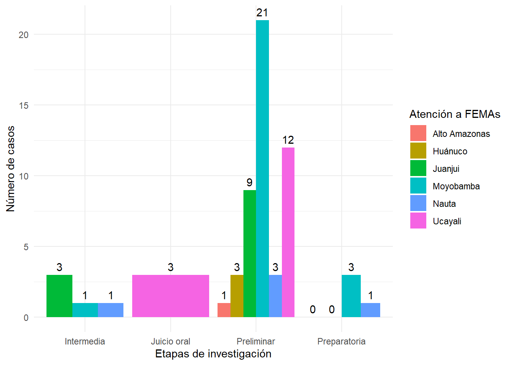
1.1.2.7 Digitalización, sistematización y control de informes de Guardaparques
Durante el presente trimestre, por solicitud de la jefatura del PN Cordillera Azul, se ha vuelto a contratar a Raissa Karel Valera García, con el objetivo de apoyar en la organizar y sistematizar la información técnica vinculada a actividades que realizan los Guardaparques. Estas son; patrullajes, vigilancia participativa, eventos de difusión, registro de beneficiarios del aprovechamiento de recursos naturales, denuncias ambientales, mantenimiento de infraestructura de los puestos y LIL proveniente de los 22 Puestos de Vigilancia y Control. Es importante mencionar, que la unidad de SIG de CIMA, coordina las actividades de esta consultora, además de revisar y hacer las correcciones necesarias, de los productos finales, que son entregados.
1.1.3 Apoyo a la Vigilancia Comunal
1.1.3.1 Salario de Apoyos comunales
En este trimestre participaron 97 personas en la vigilancia comunal, apoyando a 22 puesto de control y un refugio “Palomar”. Participaron ocho comunidades nativas (21 personas); Santa Rosa y Santa Rosita de Apua (Sede Aguaytía), Nuevo Eden, Manco Capac (Sede Contamana) y Callanayacu, Chambira y Mushuck Llacta de Chipaota (Tarapoto); y 28 centros poblados (75 personas) de las cuatro sedes ( Figure 2.2). Un registro detallado, de las personas, procedencia, así como el pago realizado por CIMA-SERNANAP para su apoyo en la vigilancia y control, pueden ser revisados en el Anexo 1.1.3.1.
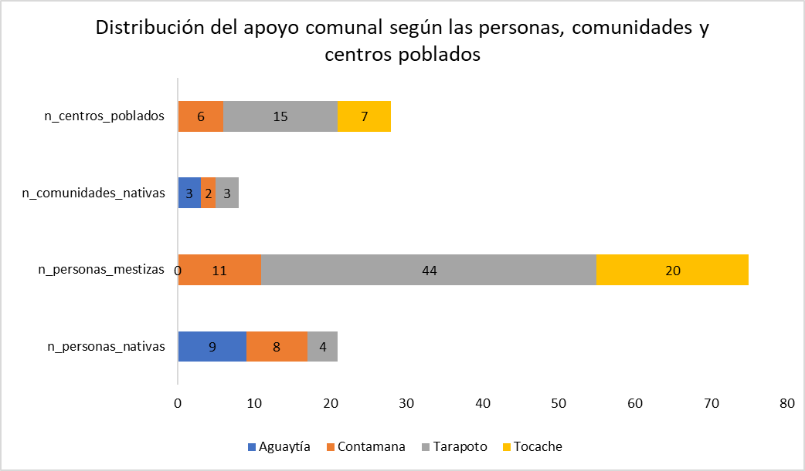
El monto total invertido por el PN Cordillera Azul, en la vigilancia comunal fue de S/.62, 896.00, de los cuales S/. 27, 900.00 fueron para las Comunidades Nativas y S/. 34, 996.00 para los Centros Poblados, que participaron en las actividades de vigilancia y control del parque, entre enero y marzo del presente año (Figure 2.3).
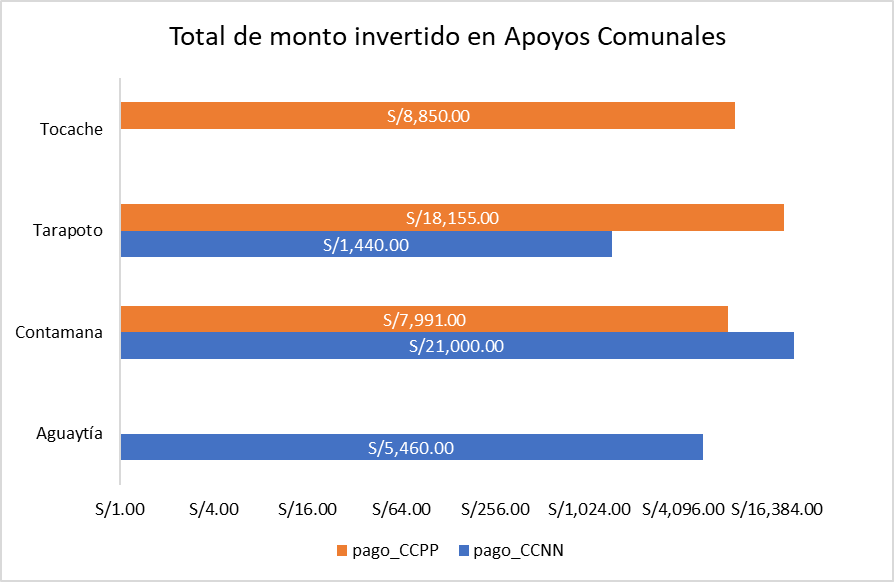
Un total de 30 mujeres (F) y 67 varones (M) participaron en la vigilancia comunal. Tres mujeres y 10 varones provienen de comunidades nativas. Mientras que el mayor número de mujeres fueron de centros poblados ubicados en San Martín y Huanuco; sedes Tarapoto y Tocache (Figure 2.4). Estas diferencias también se han visto reflejadas en los pagos que se realizaron, de acuerdo con el sexo de las personas (Figure 2.5).


1.1.3.2 Conformación de Comités de Vigilantes Comunales
No se reportaron actividades este trimestre
1.1.3.3 Fortalecimiento e implementación de Comités de Vigilantes y Rondas Campesinas y Nativas
En Santa Rosa de Shapaja se dio asistencia técnica para el análisis FODA y la elaboración de su plan de trabajo. Además, se apoyó con el servicio de contratación de personal para construir una puerta y tres ventanas, como parte de la implementación del local de la ronda campesina (Anexo 1.1.3.3).
1.1.3.4 Participación en patrullajes liderados por el SERNANP (Apoyos comunales eventuales)
Apoyo en la vigilancia y control por los técnicos de campo de CIMA
En el sector Tocache, se ha participado en 10 patrullajes rutinarios, en los subsecotres de Pólvora, Pucayacu y Aspuzana. Estas áreas fueron; Gosen, Alto San Pedro, San Juan km 33, Nueva Unión (febrero, marzo), Alto Balsayacu, Rio Azul Ibañez, Consuelo (sector rio seco), Jorge Basadre (sector Cerro Quemado) y Montaña Verde.
1.1.3.5 Víveres, combustible para realización de patrullajes comunales
En el presente trimestre, la administración de cada sede atiende los diferentes requerimientos relacionados a víveres y combustibles, para la realización de los patrullajes comunales.
Actividad 1.1.4 Vigilancia de Bosques Colindantes
1.4.1.1 Salario de custodios forestales para la CCPC
Durante el primer trimestre, se contrató un total de seis custodios; dos custodios por mes. Estas personas son comuneros de los poblados de Nuevo San Martín y Fernando Belaunde Terry, asentadas en los límites de la Concesión de Conservación Pauya Cushabatay (CCPC), Anexo 1.4.1.1.
1.1.4.2 Víveres, combustible y otros para patrullaje en la CCPC
Durante el primer trimestre, se ha brindado víveres, combustible y otros insumos a los custodios con la finalidad que puedan realizar sus actividades programadas.
1.1.4.3 Digitalización, sistematización y análisis de los informes de patrullajes
En el marco de las acciones de vigilancia y control de la jefatura del PN Cordillera Azul y la Concesión de Conservación Pauya Cushabatay, este trimestre, se realizaron actividades de vigilancia y control en coordinación con los guardaparques del Puesto de Vigilancia 106 - Boca Pauya. Estas acciones se realizaron en los sectores del río Cushabatay y Pauya hasta los límetes del parque. Caseta de Investigación de la Concesión de Conservación Pauya Cushabatay.
1.1.5 Vigilancia Remota y Sobrevuelos
1.1.5.1 Elaboración de protocolo de vigilancia remota
Durante el presente trimestre, el Área SIG ha venido revisando el protocolo de vigilancia remota trabajada con la Unidad de Teledetección y con Jefatura a fin de contar con una versión actualizada y de acorde a la realidad del Parque.
1.1.5.2 Monitoreo del Estado de Conservación y recuperación de sitios alterados de manera remota
Al primer trimestre 2024, el área intacta del PN Cordillera Azul, se mantiene en 1, 353, 141.06 hectáreas de bosque intacto; 21.95 hectáreas fueron deforestados entre el 2019 y 2024 por acción del hombre, para apertura de chacras y extracción selectiva de madera. Por otro lado, 27.62 hectáreas pertenecen al área por recuperar “Ganadero Suarez” cuya deforestación se ocasionó para el pastoreo de vacas, hace más de 20 años. Estas áreas suman un total de 49.57 hectáreas, que actualmente se encuentran en recuperación del PN Cordillera Azul (Anexo 1.1.5.2).
La deforestación acumulada al interior del parque es 23.60 ha, de bosque primario. Este desbosque está ubicado en el sector de vigilancia y control Ipururo - subsector Shanshuico. Es en este subsector se identificó deforestación por tala ilegal selectiva, siendo el área afectada 0.16 hectáreas de bosque primario (Figure 2.6, Anexo 1.1.5.2). El equipo SIG-Cima, elaboró una ficha de verificación de la alerta, que fue llenada por los guardaparques in-situ, con los detalles de la deforestación (Ficha).
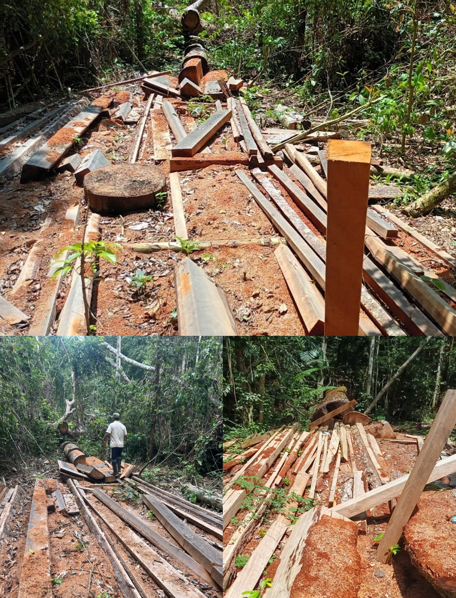
Áreas de recuperación dentro del PN Cordillera Azul
Se continúa con el monitoreo del área de recuperación “Ganadero Suarez”, el cual mostró una recuperación de 0.28 hectáreas, en relación al último trimestre del 2023 (Figure 2.7). De igual forma, hay una recuperación del bosque, en el sector Palomar (Figure 2.8); el cual fue deforestado entre el 2020 y 2022 (deforestación acumulada de 8.8 hectáreas). Estas áreas, han mostrado una recuperación de 1.66 hectáreas al presente trimestre 2024.
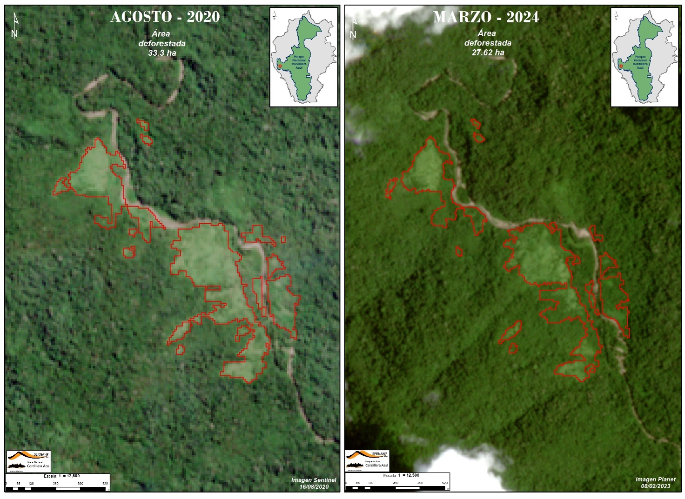
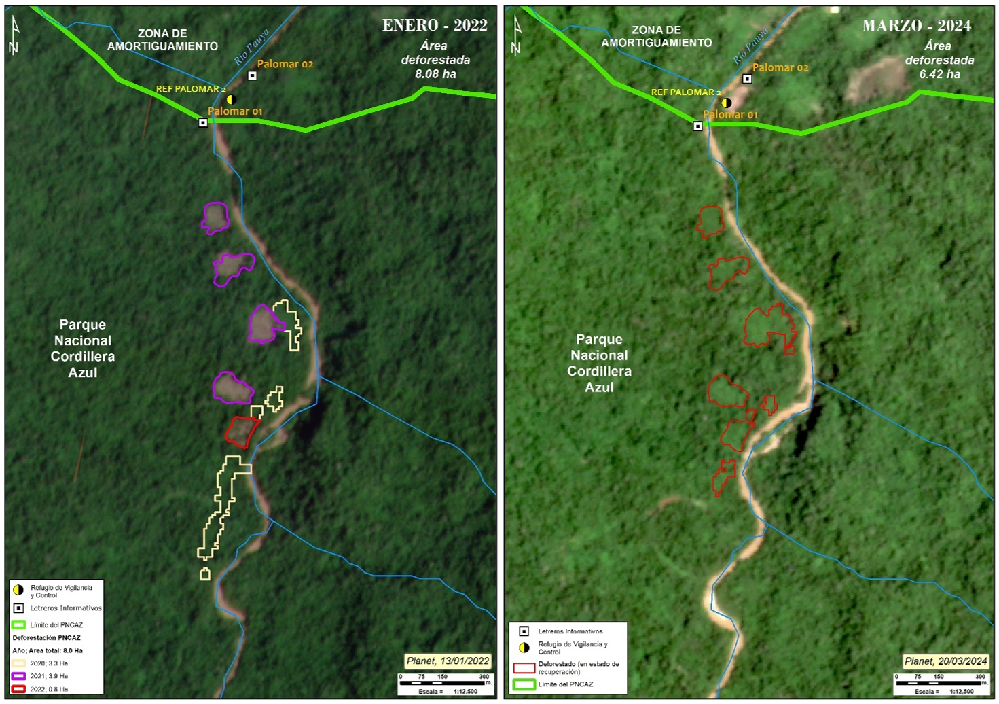
Perdida natural de bosque en el PN Cordillera Azul
La pérdida natural de bosque en este primer trimestre fue de 316.87 Ha. Los sectores de vigilancia más afectados fueron Pucayacu (0.32 ha.), Santa Ana (2.22 ha.), Boca Pauya (13.10 ha.). Mientras que, fuera de los 18 sectores críticos, la pérdida natural de bosque suma 301.23 ha, siendo las zonas más afectadas, las cabeceras del río Biavo y Shapaja (Figure 2.9).
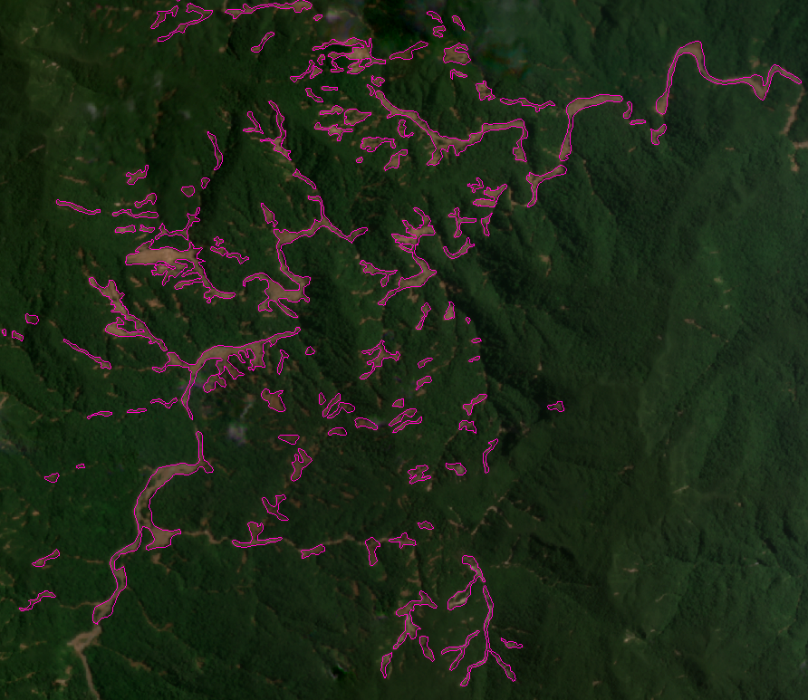
Descripción de la deforestación en la Zona de Amortiguamiento del PN Cordillera Azul
En la zona de amortiguamiento, se registró un total de 824.50 hectáreas deforestadas al primer trimestre 2024 - que incluye los anillos de intervención 1 y 5 km, alrededor del PN Cordillera Azul (Figure 2.10).

En el anillo de intervención de 1 km, se ha identificado un total de 19.54 ha de deforestación, localizadas en 8 de los 18 sectores críticos de vigilancia y control (Anexo 1.1.5.2 - sección “deforestación en la ZA”). En el buffer de 5 km, en 16 de los 18 sectores, la deforestación alcanzó un total de 238.14 ha; siendo los más afectados los sectores de Santa Ana, Ipururo y Polvora y Shapaja (Figure 2.11).
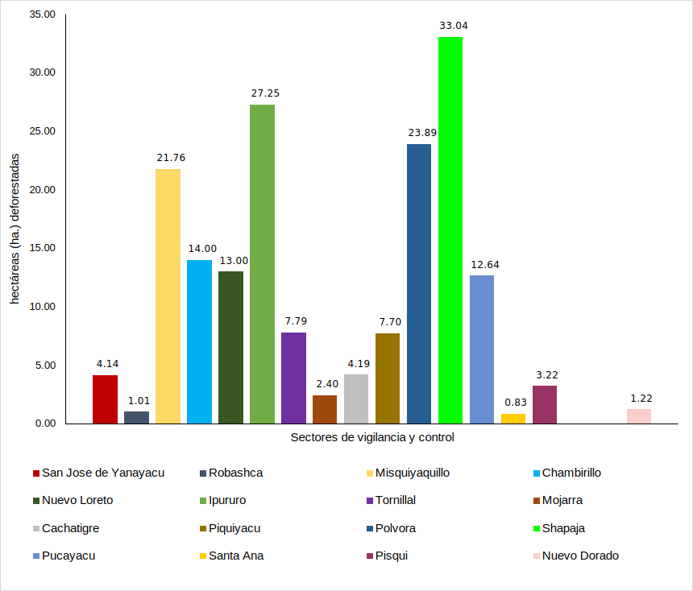
Apertura de vías en la ZA del Parque
En el primer trimestre 2024, se aperturo 6.39 kilómetros de vías (trochas) en la zona de amortiguamiento del PN Cordillera Azul, en los sectores Shapaja (4.52 km) y Santa Ana (1.87 km), ver Anexo 1.1.5.2 - sección “apertura de trochas”. Entre el 2013 y 2023, se han abierto vías dentro de Concesiones (principalmente forestales) y fuera de ellas, en el ámbito de la ZA del parque, el cual representa 1721.03 km de caminos (Figure 2.12).
Apertura de vías más allá de los 5 km de buffer, en la ZA
Una parte significativa de la deforestación está relacionada con la apertura de trochas en la zona de amortiguamiento, principalmente con fines de aprovechamiento forestal, ya sea dentro de una concesión o fuera de esta. Estas trochas tienen la finalidad de conectar las concesiones con la vía principal más cercana. Destacan los sectores de Santa Ana (220.77 km) y Nuevo Dorado - Santa Catalina (380.14 km) como las áreas con mayor deforestación por apertura de vías (Anexo 1.1.5.2); la mayoría de estas trochas (67%) se encuentran fuera de las concesiones forestales, y son utilizadas para el transporte de madera.

Alertas de focos de Calor
Durante el primer trimestre del 2024 no se registraron alertas de focos de calor, dentro del parque (Figure 2.13). Sin embargo, en la ZA se registraron 816 alertas de focos de calor; 30 alertas fueron detectadas en los anillos 1 (n=1 alerta) y 5 km (n= 29 alertas). Respecto del último trimestre 2023 (octubre-noviembre-diciembre), las alertas disminuyeron 35% en este primer trimestre.

Opiniones técnicas
En el proceso de emisión de opiniones técnicas, el Área SIG-CIMA realiza una evaluación integral de los proyectos en consulta, teniendo en cuenta múltiples factores clave. Esto incluye la revisión de la conformidad con los requisitos legales, un análisis detallado de la cobertura vegetal en las áreas de interés, consideración de aspectos físicos del entorno y la identificación de zonas que restringen ciertos usos, como los bosques de producción permanente (BPP).
Durante este trimestre, el Área SIG-CIMA en coordinación con la Jefatura del SERNANP recibió y atendió 132 solicitudes, en el periodo de enero a marzo 2024, los cuales han sido evaluados, según su impacto potencial (Table 2.3). Estas opiniones se dividen en Opiniones Técnicas (26 solicitudes) y Consultas Generales (106). En el Anexo 1.1.5.2 se detallan los tipos de opiniones técnicas y solicitudes generales.
| Solicitudes totales | N=132 | Impacto potencial |
| Opiniones técnicas | N=26 | |
| Concesiones, Plan de manejo forestal, DEMA | 3 | Medio |
| Instalación de Grifos | 1 | Bajo |
| Actividad acuícola (piscigranjas) | 2 | Bajo |
| Red de distribución de telecomunicaciones (telefonía, internet, radio, otros) | 0 | Medio |
| Petitorio minero | 2 | Medio |
| Proyecto de cultivo y/o asistencia técnica (plátano, cacao, café, bambú, arroz, otros) | 0 | Alto |
| Muro de Protección, defensa ribereña y/o recuperación de faja marginal de rio | 1 | Medio |
| Estación de telecomunicaciones (telefonía, internet, radio, otros) | 3 | Bajo |
| Uso de agua para actividad agrícola y/o riego | 1 | Medio |
| Construcción de infraestructura (instituciones, hospital, embarcadero, otros) | 1 | Bajo |
| Construcción y/o mantenimiento de caminos (trocha, puente) | 3 | Medio |
| Instalación de servicios y/o sistemas para distribución eléctrica (paneles, cables, otros) | 3 | Medio |
| Construcción de infraestructura ecoturística (albergues) | 1 | Bajo |
| Establecimiento de bosque local, concesión para conservación, reforestación y/o restauración | 0 | Bajo |
| Extracción de aceite de palma | 0 | Medio |
| Instalación o modificación de agua y desagüe | 4 | Bajo |
| Mejoramiento de capacidades para crianza de animales menores | 0 | Bajo |
| Construcción y/o mejoramiento de drenaje pluvial | 1 | Bajo |
| Solicitudes generales | N=106 | |
| Consultas generales | 56 | Bajo |
| Alertas tempranas (mensuales) focos de calor - SERFOR | 10 | Alto |
| Caso Puerto Franco | 0 | Medio |
| Caso Central Hidroeléctrica Alto Biavo | 0 | Medio |
| Cultivos ilícitos | 0 | Alto |
| Incendio forestal poblado Jorge Basadre | 0 | Alto |
| Otros formatos (no mapa) | 0 | Bajo |
| Ubicación-General | 2 | Bajo |
| Capacitaciones | 3 | Bajo |
| Deforestación | 29 | Alto |
| Registro de SMART | 6 | Bajo |
1.1.5.3 Equipamiento para la vigilancia remota (PC,drones, otros)
Actividad no programa este trimestre.
1.1.5.4 Sobrevuelos
Actividad no programa este trimestre.
1.1.6 Capacitación del personal guardaparque, especialista y técnicos de campo
1.1.6.1 Elaboración de un plan quinquenal de capacitaciones de campo
Actividad no programa este trimestre.
1.1.6.2 Capacitación de guardaparques, especialistas y técnicos
Capacitación en el uso y manipulación de sueros antiofídicos, en la sede Tarapoto de CIMA-SERNANP. La capacitación estuvo dirigido al personal administrativo, especialistas y guardaparques de CIMA-SERNANP y los técnicos de campo de CIMA; siendo un total de 20 compañeros de trabajo. Dos profesionales de la salud dictaron la capacitación; un licenciado y un técnico en enfermería (Anexo 1.1.6.2)
Durante la sesión se abordaron tres temas específicos:
A pedido del equipo técnico de campo, se trató sobre la prestación de primeros auxilios en caso de fracturas por accidentes de tránsito o por algún incidente en campo como caídas durante caminatas en campo o por el impacto de algún objeto como por ejemplo un árbol.
Manipulación y aplicación correcta de medicamentos inyectables, ya sea intra muscular o intra venoso.
Manipulación y correcta aplicación de suero antiofídico.
Recomendaciones
El suero antiofídico debe ser aplicado intravenosa - No Intramuscular. En este sentido, además del suero y el diluyente, debe utilizarse una solución de cloruro, para mezclar el suero.
Es necesario aplicar al paciente, una inyección de dexametasona y clorfenamina previo a la aplicación del suero antiofídico preparado. Esto es importante para evitar reacciones secundarias alérgicas, que puedan poner en peligro la vida del paciente; especialmente si tienen una condición previa como diabetes, hipertensión arterial, por ejemplo.
Resultados de la capacitación
La administración de la sede entrego un kit, que contiene el suero antiofídico y el diluyente, y los otros implementos necesarios.
Según las recomendaciones de los capacitadores, los técnicos de campo y guardaparques en sus puesto de vigilancia, deben tener siempre un kit completo específico para atender emergencia por mordeduras de serpientes. De esta manera, una lista de requerimiento está siendo solicitada (Table 2.4).
| Kit | Unidades requeridas |
|---|---|
| Dexametasona | 1 |
| Clorfenamina | 1 |
| Suero antiofídico | 1 |
| Agua destilada | 2 |
| Cloruro de Sodio 100 ml | 2 |
| Equipo de venoclisis | 2 |
| Cateter n°22/24 | 2 |
| Llave triple vía con extensión | 2 |
| Esparadrapo | 1 |
| Ligadura | 1 |
| Guantes quirúrgicos | 2 |
| Jeringa 10 ml | 2 |
| Aguajas n°18 | 2 |
| Alcohol 1L | 1 |
| Paquete de algodon | 1 |
| Recipente de tapa hermetica | 1 |
Capacitación de SMART en el PN Cordillera Azul
La capacitación se ha realizado con el objetivo de reforzar los conocimientos teóricos y prácticos de la herramienta SMART Mobile, en las sedes de Tarapoto, Aguaytía y Contamana (Figure 2.14). Participaron un total de 40 personas, entre guardaparques, especialistas y técnicos de campo de CIMA y SERNANP (Anexo 1.1.6.2).
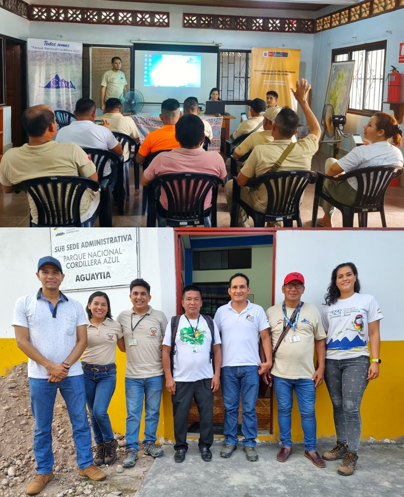
1.1.7 Construcción, refacción, equipamiento y mantenimiento de Puestos de Vigilancia y Control
1.1.7.1 Condiciones habilitantes para la construcción (saneamiento, opinión técnica y otros)
1.1.7.2 Construcción de PVC
En este trimestre, se ha construido un refugio en el sector Palomar - Shashuico y se continúan con la construcción del Puesto de Vigilancia y Control del Pisqui, el cual se tiene programado concluir el mes de abril, del presente año (Anexo 1.1.7.2).
1.1.7.3 Refacción parcial de PVC
En la sede Tarapoto, se realizaron las siguientes acciones:
Construcción de nuevos servicios higiénicos en el PVC 19.
Construcción de servicios higiénicos en el PVC 19.
Mejoramiento de acceso a los SSHH del PVC 21.
Acondicionamiento de un dormitorio en el PVC 14.
Reparación y mantenimiento del biodigestor y colocación de tanque de agua subterráneo del PVC Nuevo Loreto.
1.1.7.4 Mantenimiento de Equipos de PVC (SERNANP-CIMA)
En el presente trimestre, la administración de cada sede atiende los diferentes requerimientos relacionados al mantenimiento de equipos de los puestos de vigilancia, cuando estos son requeridos. En las metas físicas y financieras se detallan montos globales.
1.1.7.5 Equipamiento de PVC
Los puestos de vigilancia y control, dentro de la jurisdicción de la sede Tarapoto, han sido equipados con lo siguiente:
Cama, colchón y juego de sábanas al PVC Piquiyacu.
Cama, colchón y juego de sábanas al PVC 18.
Cama, colchón y juego de sábanas al PVC 21.
Dos mesas de madera y 6 sillas para el PVC 16.
Dos camas tarimas, 3 colchones, 3 mosquiteros y 3 juegos de sábanas para el PVC 11.
Dos camas tarimas, 2 colchones, 2 mosquiteros, 2 colchas polares y 2 juegos de sábanas para el PVC 14.
Cinco protectores de colchones y 5 mosquiteros para personal del PVC Shanshuico y el refugio Palomar.
Una cocina de mesa para el PVC Robashca (para ser asignado a Callanayacu).
Diez unidades de sueros antiofídicos para los PVC
1.1.7.6 Equipamiento para personal GP
En la sede Tarapoto, se equipó al personal guardaparque con lo siguiente:
Implementación con equipos de campo (carpas, bolsas de dormir, colchonetas, colchonetas, linternas, botas, capotas para lluvia) a personal guardaparque, recientemente incorporados a la gestión.
31 pares de botas de jebe para personal guardaparque.
1.1.7.7 Hitos y letreros (LIL, LIZA, LIC)
En este trimestre, se sinceró el número de letreros comunales instalados en las comunidades de la ZA del parque. Para ello, el equipo SIG en coordinación con la coordinación de las cuatro sedes; Aguaytía, Tocache, Tarapoto y Contamana, utilizaron una ficha digital predeterminada en el aplicativo KboCollect, con la finalidad de facilitar el registro en tiempo real, además de permitirles, guardar fotos (Figure 2.15) y obtener un registro espacial de la ubicación de los letreros (Figure 2.16). Revisar el Anexo 1.1.7.7, para un registro detallado de la ubicación espacial y fotos, de los letreros comunales.
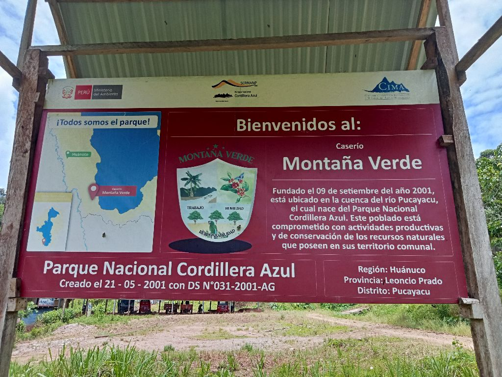
Hasta la fecha, desde el 2022, se han instalado 36 letreros informativos comunales (Figure 2.16), en las sedes de Tocache (18), Tarapoto (16) y Aguaytía (2). De los cuales, 33 fueron instalados en comunidades mestizas y tres en comunidades nativas; Santa Rosa de Aguaytía y Santa Rosita de Apua, en Aguaytía. Una en Tarapoto; la comunidad Unión de Corotoyacu.

1.2. Resultado intermedio: Las especies cinegéticas se mantienen en los sectores de uso al interior del PNCAZ
1.2.1. Monitoreo de especies cinegéticas
1.2.1.1 Elaboración de protocolo de especies cinegéticas
Esta actividad será programada con la jefatura del PN Cordillera Azul y la Sede Central del SERNANP
1.2.2. Monitoreo del uso de fauna
Esta actividad será programada con la jefatura del PN Cordillera Azul y la Sede Central del SERNANP
1.2.2.1 Registro oficial de usuarios de caza y pesca
Para este año, se está desarrollando una base de datos del registro de usurarios, para realizar actividades de cacería y pesca de subsistencia, principalmente. Así, registramos 41 personas provenientes de 4 comunidades nativas y 5 centros poblados, ubicados en la ZA del PN Cordillera Azul. El promedio de edades, en el centro poblado fue 36 años (n=24 ind.), y en las comunidades nativas; los Kichwas y Shipibo-Konibo el promedio fue de 31 años (n=11 ind. y 5 ind., respectivamente). Sólo la etnia Yine, de la comunidad Libertad, se registró una persona de 48 años (Figure 2.17). Además, un usuario de 36 años se identificó procedente de la ciudad de Tarapoto, ingresando por el Puesto Misquiyaquillo (Anexo 1.2.2.1). A la fecha, la mayoría de personas que ingresan al parque por subsistencia, no sobrepasa los 36 años.
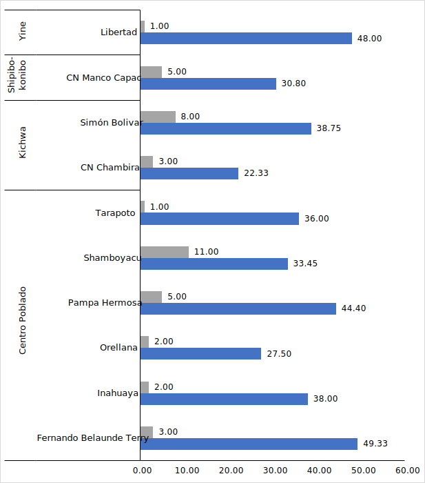
Se registraron 13 lugares dónde las comunidades realizaron la cacería y pesca ( Figure 2.18). Siente lugares de destino, son aprovechados por personas que provienen de centros poblados y seis lugares, por comunidades nativas. De las tres etnias nativas registradas este trimestre, los Kichwa utilizaron más lugares en comparación con Shipibos-Konibos y Yines ( Figure 2.18). Resalta el sector Ipururo, dónde se hizo aprovechamiento tanto en la ZA y dentro del Parque; siendo el lugar con mayor número de personas (13 ind.).
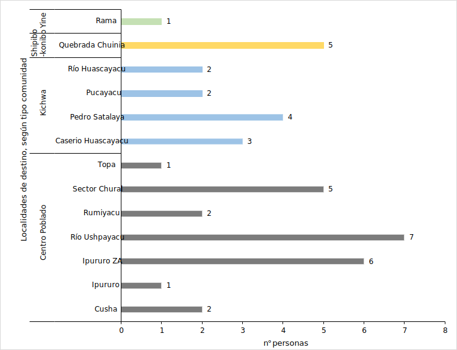
1.2.2.2 Establecimiento y ajuste de cuotas y normas de aprovechamiento
Esta actividad será programada con la jefatura del PN Cordillera Azul y la Sede Central del SERNANP
1.2.2.3 Registro de aprovechamiento de fauna
Este trimestre, registramos nueve especies de importancia para la cacería y la pesca de subsistencia. Los guardaparques, registraron 32 usuarios, que ingresaron al Parque, por motivos de caza y pesca. El “Majas” fue la especie más importante en términos de cacería en este trimestre; 16 usuarios aprovecharon un total de 358 kg (n= 51 ind.). Los mamíferos extraídos por cacería, representan 507 kg y las aves “Pucacunga” 5 kg. Mientras que, respecto a la pesca, la”Carachama” fue la única que se registro como aprovechada; un total de siete personas pescaron 44 kg (Figure 2.19). El Anexo 1.2.2.3 se presenta el conjunto de datos, con el detalle de los usuarios, su procedencia y el número de especies cazadas y pescadas.
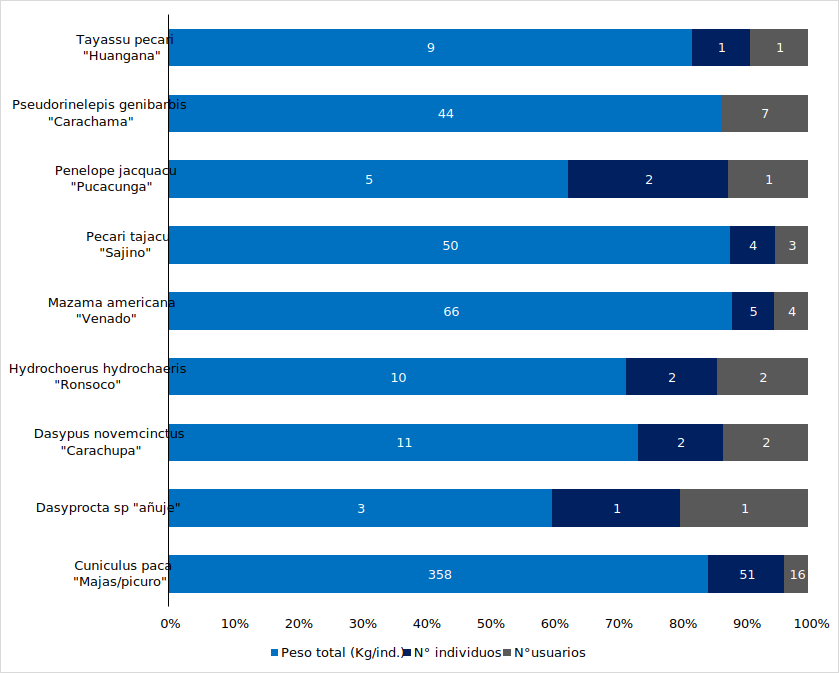
Finalmente, 375 kilogramos fueron extraídos por caza y pesca por 19 individuos que provienen de un centro poblado. Mientras que, las etnias Kichwa, Shipibo-Konibo y Yine extrajeron 106, 40 y 35 kg, para su subsistencia, respectivamente (Figure 2.20).
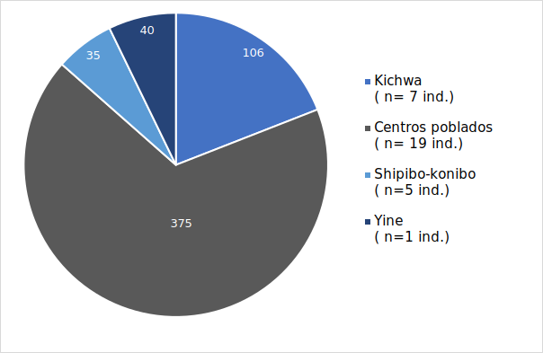
1.2.2.4 Elaboración de materiales para la difusión de cuotas y normas de aprovechamiento
Esta actividad, está programada una vez desarrollado las actividades previas y debe ser realizada junto con la Jefatura del PN Cordillera Azul.
1.2.3 Registro de Fauna Silvestre
1.2.3.1 Registro de fauna a cargo de GP
En los 21 sectores de vigilancia y control, se registraron cerca de 230 especies de fauna silvestre (mamíferos, roedores, aves, anfibios, reptiles, peces) que los guardaparques distinguen por nombre común. Sin embargo, estos registros, no están plenamente identificados al 100%, porque son especies de aves, roedores y anfibios, que no son fáciles de identificar en campo. De este número total, se tienen plenamente identificados 40 especies, que son especies comunes, principalmente mamíferos, aves y reptiles que son fácilmente identificables.
Todos estos registros provienen de los patrullajes rutinarios, realizados entre la zona de amortiguamiento y dentro del parque. Los sectores con mayores registros provienen de Ipururo (20 spp., 52 registros) y Shanshuico (17 spp., 40 registros). Mientras que los sectores en Piquiyacu, Cachatigre y Nuevo Dorado tuvieron registros similares, aunque un menor número de especies (Figure 2.21).
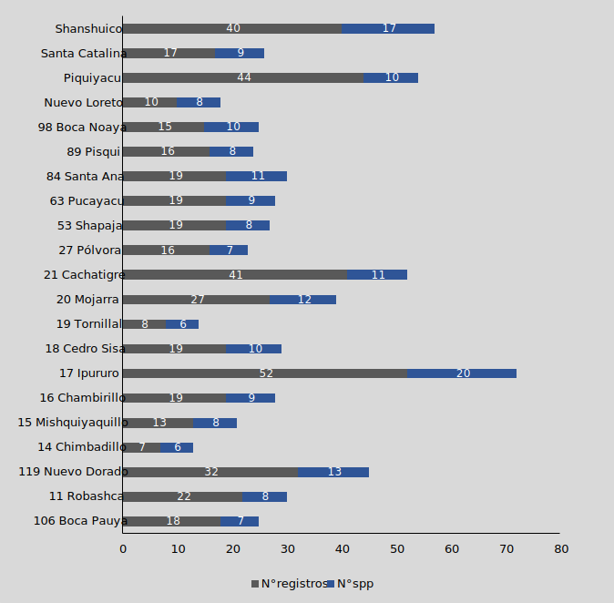
De acuerdo con la distribución de los 22 puestos de vigilancia y control, las especies de fauna más frecuentes, fueron el “Vendado” Mazama americana, ”Sachavaca” Tapirus terrestris, ”Majas” Cunniculus paca, ”Sajino” Peccari tajacu, ”Paujil” Mitu tuberosum, Penelope jacquacu, ”Otorongo” Panthera onca y ”Tucan” Rhamphastos tucanus (Figure 2.22). Estas especies fueron avistadas en más de 10 sectores de vigilancia y control; es decir representan las especies más comunes en los patrullajes rutinarios. Las otras especies, no son tan comunes, y algunas sólo fueron registradas en cinco de los 22 puestos de vigilancia. En el Anexo 1.2.3.1 se indican la lista total de especies, y el número de avistamientos por puestos, 11 de estas especies sólo fueron avistadas en un puesto, 16 especies en dos puestos y nueve en cuatro puestos. Resaltan los registros de”Perro de Monte” Speothos venaticus, “Carachupa mama” Priodontes maximus, Puma concolor, “Oso de anteojos” Tremactos ornatus, “Tigrillo” Leopardus pardalis y “Maquizapa” Ateles chamek.
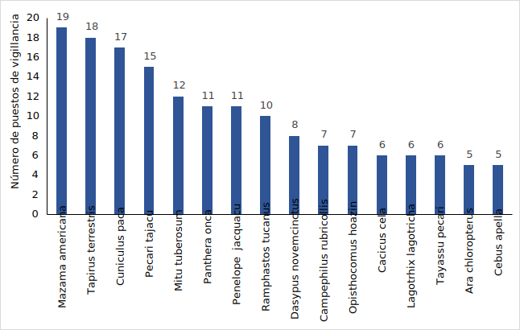
Considerando el número total de individuos (n=3253 ind.) y especies registrados por nombre común (n =~230 spp) - que incluye las 40 especies identificadas - encontramos que los puestos con mayor registro de individuos fueron realizados en Mojarra, Ipururo, Chimbadillo y Cachatigre. Nueve puestos, presentaron más de 100 registros. Mientras que, el puesto San José de Yanayacu presentó el menor número de individuos (Figure 2.23).
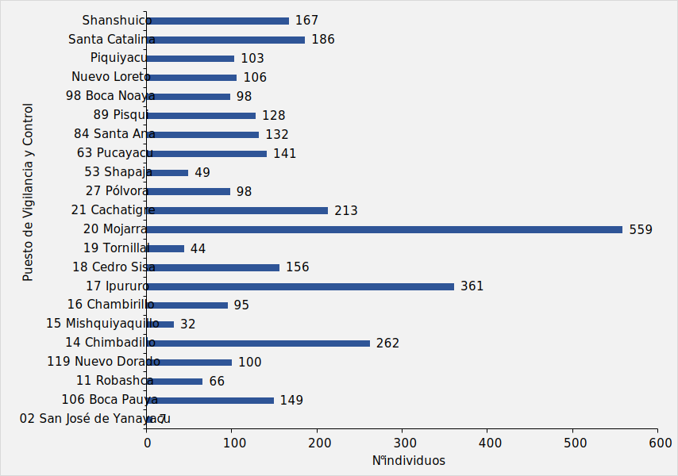
Finalmente, considerando el número total de especies identificadas (~230 spp) y el número de individuos observados en cada sector de vigilancia y control, encontramos que a medida que aumenta el número de individuos, tenemos más oportunidad de registrar más especies de fauna ( Figure 2.24). También se observa que, cuando alcanzamos un registro cercano a 200 ~ 300 individuos, el número de especies no aumenta más. Lo cual podría indicar que el máximo número de especies que se pueden registrar durante los patrullajes rutinarios, es ~230 especies, y este no aumentará pasado los 400 individuos (~400 ind., Figure 2.24). Sin embargo, el patrón observado en la Figure 2.24 debe ser tomado con precaución. Otras variables deben tomarse en cuenta para monitorear la comunidad de especies, como las actividades humanas cercanas, la localización, tiempo y distancia de los patrullajes rutinarios. Sólo la investigación vinculada a las actividades de gestión, orientarán mejores resultados, para medir la efectividad de nuestras acciones y progresos.
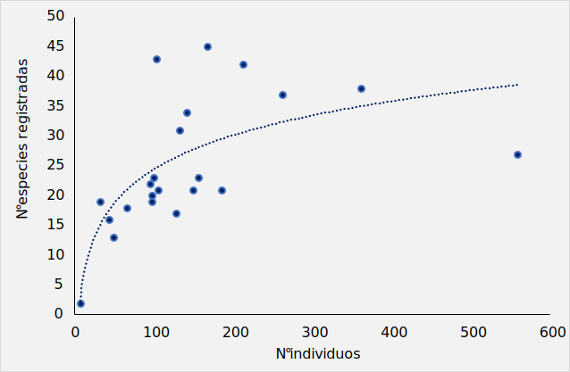
1.2.3.3 Sistematización y análisis en SMART
Este trimestre, se continúa con la sistematización de los registros de los guardaparques a través de la plataforma SMART.
1.3 Resultado intermedio: Se fortalece la gobernanza del PNCAZ con los actores relevantes
1.3.1 Seguimiento al Contrato de Administración
1.3.1.1 Contrato de Administración (Comisión de Seguimiento)
Durante el presente trimestre, no se desarrolla ninguna reunión de la comisión de seguimiento debido a que la Comisión Ejecutiva del Comité de Gestión no esta vigente, toda vez que su periodo de vigencia fue hasta agosto del 2023. Y por lo antes manifestado, no ha sido posible actualizar los miembros de la Comisión de Seguimiento del Contrato de Administración del PNCAZ.
1.3.1.2 Seguimiento a los acuerdos
Esta actividad está programada para el siguiente trimestre.
1.3.2 Fortalecimiento del Comité de Gestión del PNCAZ con grupos de interés integrados
Actividad no programa este trimestre.
1.3.3 Fortalecimiento de capacidades a las CCNN y a las organizaciones indígenas de la ZA del PNCAZ
1.3.3.1 Convenio con las organizaciones indígenas (agrupa varias comunidades)
El 28 de febrero del presente año, en los ambientes de la oficina de CIMA Aguaytía, se llevó a cabo una reunión con el presidente (e) Marcelo Odicio Angulo de la Federación Nativa de Comunidades Kakataibos – FENACOKA, y con su equipo técnico, donde se trató temas relacionados a las actividades que CIMA viene realizando en las CCNN bases de la FENACOKA, ubicadas en la zona de amortiguamiento del Parque Nacional Cordillera Azul.
Posterior a esta reunión y de acuerdo a lo acordado de forma verbal y en marco al convenio entre CIMA y FENACOKA, se compartió a la federación una copia de los siguientes documentos: - “Mejoramiento de las infraestructuras para el servicio de alojamiento de la asociación de Turismo Ecológico Saludable Ñuina Kama Jisti de Yamino”, (estado: ejecutado) - “Implementación y mejora de capacidades para la producción de artesanías de calidad y el incremento de las ventas de la Asociación de Artesanas Kari Isa Xanu de Yamino”, (estado: en proceso de ejecución) - Convenio de Colaboración Interinstitucional entre FENACOKA y CIMA. - Catálogo: “Artesanía Kakataibo 2023, de Yamino para el mundo” en digital y 15 unidades en físico. Por su parte, el presidente de la federación reafirmó su compromiso de seguir trabajando en el marco del respeto institucional entre CIMA y FENACOKA, y mencionó que CIMA es un aliado importante para lograr concretar los objetivos comunes de sus comunidades ubicadas en la ZA del PNCAZ bases de la federación.
En marco al “Convenio de interinstitucional entre la Federación Nativa de Comunidades Cacataibos (FENACOCA) y el Centro de Conservación, Investigación y Manejo de Áreas Naturales – Cordillera Azul (CIMA – Cordillera Azul)”, se realizó la siguiente actividad: - En referencia a la solicitud mediante CARTA N°001-2024-MOA-FENACOKA-PA de la FENACOKA presentada a CIMA Cordillera Azul, donde solicita donación de materiales de escritorio para la oficina de FENACOKA, se hizo entrega en calidad de donación de 10 artículos para uso de la Federación (?tbl-convenio).
| Artículos donados | Cantidad |
|---|---|
| Papel bond A4 | 2 millares |
| Folder manilla A4 | 2 paquetes (25 unidades x paquete) |
| Tinta para impresora EPSON - L6270 | 4 unidadea (negro, magenta, cyan y yellow) |
| Plumón acrílico | 1 docena |
| Grapas | 1 cajita |
| Tijera mediana | 1 unidad |
| Chinches | 1 cajita |
| Mota para pizarra acrílica | 1 unidad |
| Archivadores | 6 unidades |
| Cinta masketin | 3 cinta masking |
Se entregó estos materiales el día 15 de febrero del 2024, en los ambientes de la oficina de FENACOKA. Participaron por parte de la FENACOKA Sr. Marcelo Odicio Angulo, presidente (e) y de CIMA Sr. Juan Flores Fabian, coordinador regional. Este apoyo es con la finalidad de fortalecer a la FENACOKA y contribuir con el desarrollo de sus comunidades bases que se encuentran en la ZA del PNCAZ como las CCNN de Mariscal Cáceres y Yamino (etnia Kakataibo) y Nuevo Azul (etnia Ashaninka).
1.3.3.2 Elaboración del plan de capacitaciones
Actividad no programa este trimestre.
1.3.5 Actualización de Plan Maestro (2024-2028)
1.3.5.1 Evaluación y diagnóstico (se necesitan 4 reuniones)
Important
Esta actividad se ha programado para el 2025. Sin embargo, para el tercer trimestre 2023 vamos iniciar la organización, sistematización y diagnóstico de la información base, que permitirá agilizar el proceso de actualización.